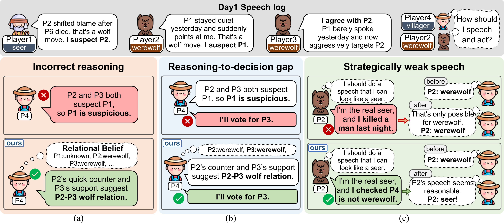
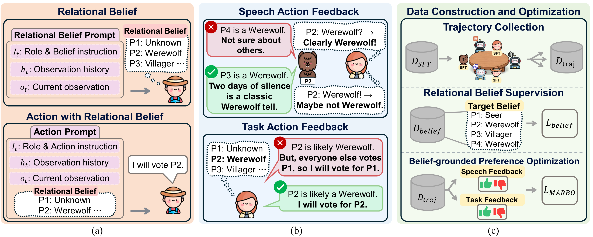
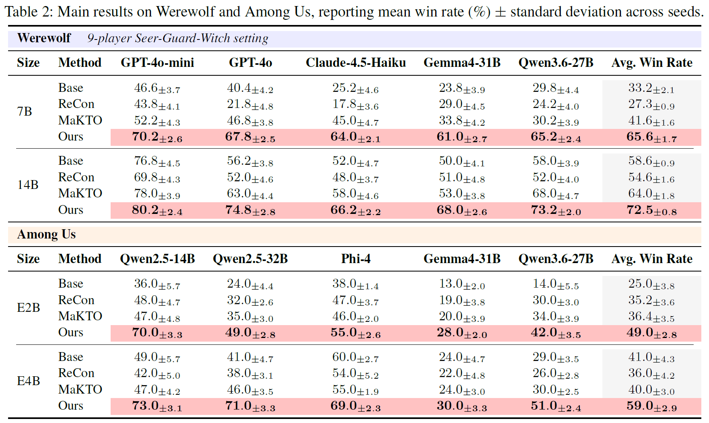

Abstract
Social deduction games (SDGs) require agents to reason under partial observability by maintaining relational beliefs about hidden roles and team alignments. While recent LLM-agent approaches improve gameplay through prompting and preference optimization, they often optimize actions and in-game speech without explicitly grounding them in such beliefs. This frequently leads to strategically inconsistent behavior, especially for compact LLM agents. We introduce Multi-Agent Relational Belief Optimization (MARBO), a belief-grounded preference optimization framework that leverages relational beliefs to guide strategic decisions and in-game speech. MARBO provides preference feedback only when behaviors are supported by reliable relational beliefs and lead to strategically favorable social outcomes, encouraging more consistent learning under uncertainty. Experiments on representative SDGs show that MARBO enables compact LLM agents to consistently outperform existing baselines.
Overview
MARBO

TL;DR. MARBO provides preference feedback when behaviors are supported by reliable relational beliefs and lead to strategically favorable social outcomes.
Method

Results

Cite
@inproceedings{hwang-etal-2026-marbo,
title = {MARBO: Relational Belief Grounding for LLM Agents in Social Deduction Games},
author = {Hwang, Yechan and
Bae, Sangjun and
Kim, Jeongmo and
Bang, Sangwoo and
Han, Seungyul},
booktitle = {Proceedings of the 2026 Conference on Empirical Methods in Natural Language Processing},
year = {2026},
address = {Budapest, Hungary},
publisher = {Association for Computational Linguistics}
}